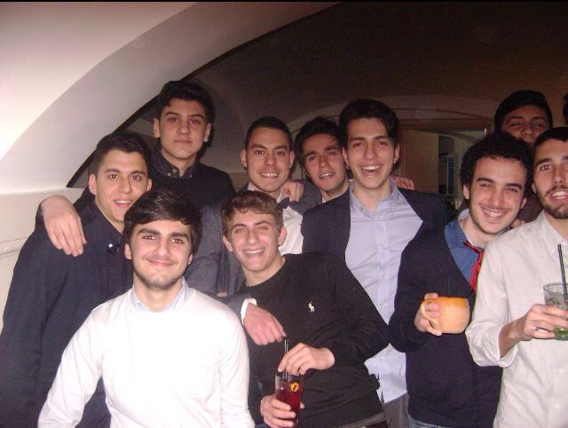
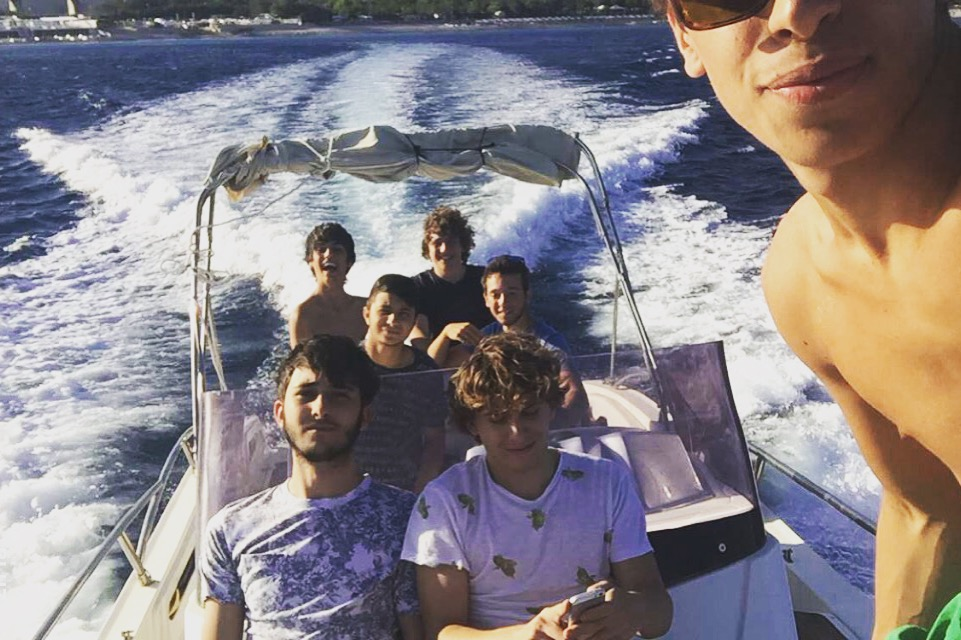
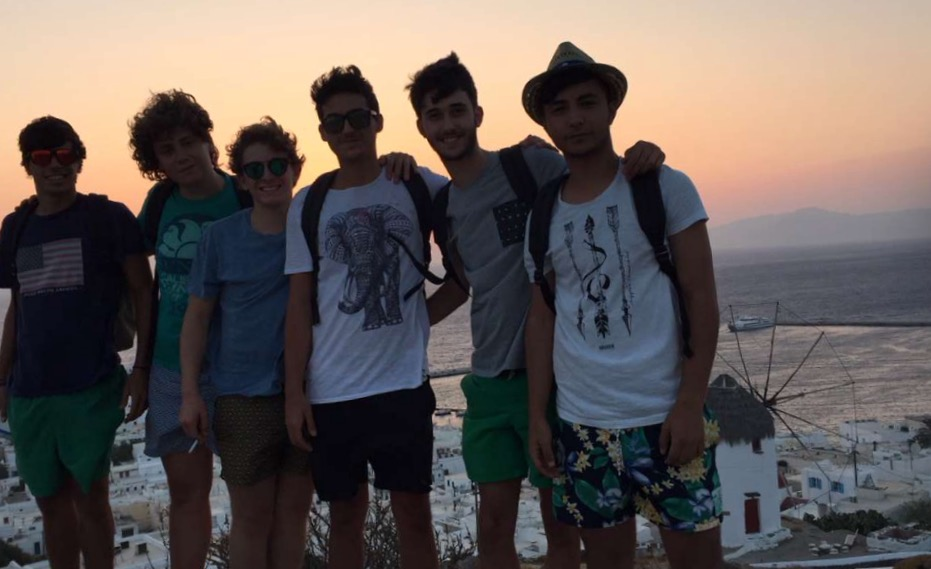
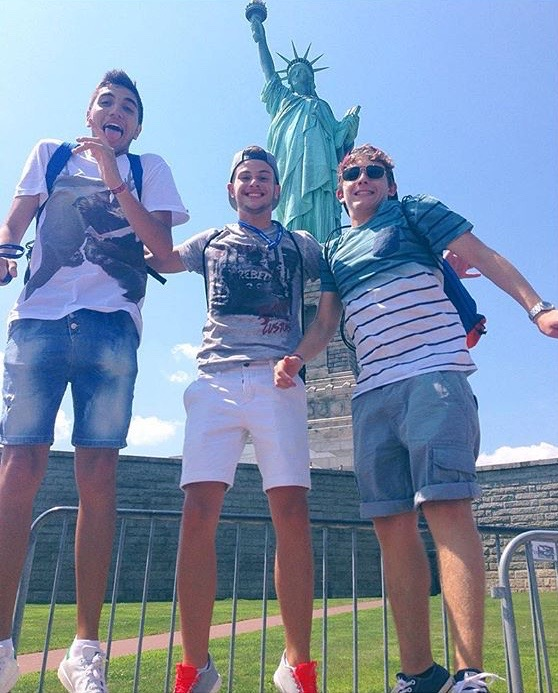

Sono nato a Catanzaro il 3 Ottobre 1998.
La mia infanzia l'ho trascorsa nella mia città natale frequentando la scuola elementare "T.Campanella" del mio quartiere. Ho frequentato la scuola media "F.Todaro", ho concluso la mia formazione scolastica presso il Liceo Classico "P.Galluppi". Ed è grazie alla mia formazione classica che ho potuto stimolare l'interesse e l'amore per la storia dell'arte. Ciò è stato uno dei tasselli fondamentali per la mia successiva scelta universitaria. Infatti da questo Settembre ho inziato un nuovo percorso in una nuova città, Milano. Attualmente, infatti, frequento la facoltà di Design d'Interni al Politecnico di Milano, con l'ambizione di poter un giorno avere un ruolo professionale in America. Quest'ultimo è per me infatti, il miglior Paese per sfruttare al massimo le conoscenze e le possibilità che il mio corso di studi offre.
Nel corso della mia carriera scolastica ho avuto modo di stringere diverse amicizie che tutt'ora coltivo constantemente. Mi ritengo un ragazzo caparbio, simpatico ed estroverso a cui piace fare nuove conoscenze. Nel corso del mio percorso formativo ho conosciuto persone sempre nuove che mi hanno arricchito chi più e chi meno. Ho un grande gruppo di amici sparsi per varie città d'Italia con cui sono molto legato.
 
Ho diverse passioni:
Grazie alla mia famiglia ho avuto sempre grandi stimoli e possibilità per poter viaggiare, ampliare le mie esperienze e conoscenze. E' sempre grazie ai miei genitori se ho avuto l'opportunità di varcare il continente ed arrivare fino in America, posto meraviglioso e da sempre al centro dei miei sogni. Durante gli svariati viaggi, molti sono stati i modi per conoscere nuove culture completamente diverse dalla mia. Avendo inoltre una passione per l'arte ho sempre cercato di coniugare ogni viaggio con tutto ciò che poteva arricchirmi culturalmente. Ciò non esclude che molti viaggi siano stati solo ed esclusivamente di piacere, come avrei potuto scegliere una meta esclusivamente intellettuale per il viaggio di maturità?
 
Facendo parte della generazione Millennials posso definirmi anche io un appassionato di videogiochi; la mia piattaforma preferita è la PS4 sulla quale adoro giocare specialmente online interagendo con giocatori di diverse nazionalità.
Sono un ragazzo che sin da giovane ha sempre praticato sport in particolar modo il calcio, da sempre una delle mie grandi passioni e che ho svolto fino a pochi anni fa. Sono un grande tifoso del Milan.